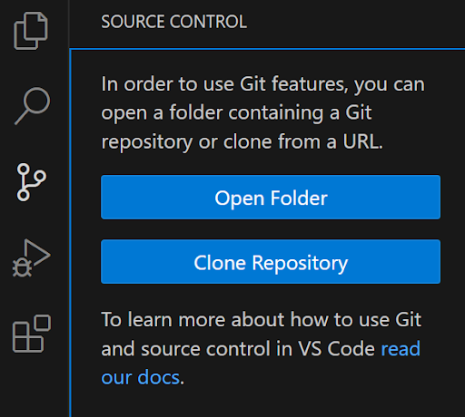
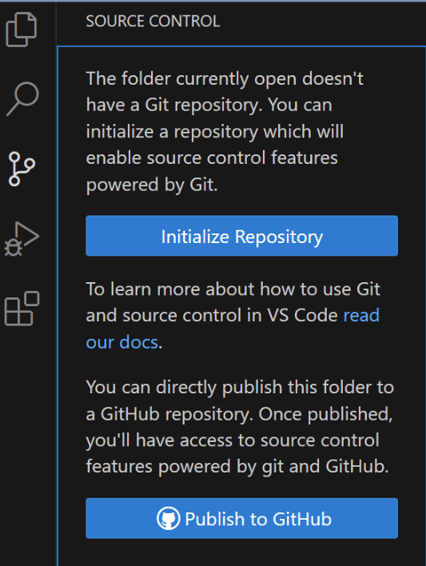
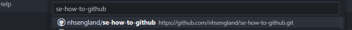
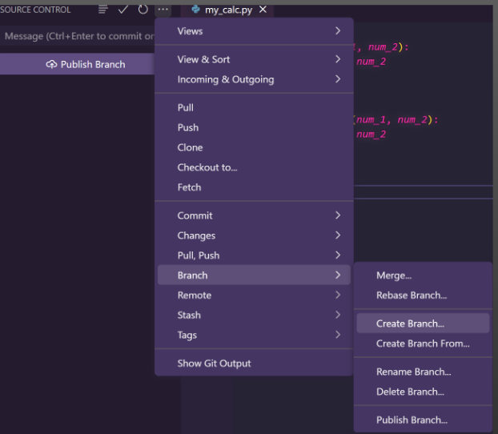

GitHub in VS Code
Setting up Git in VSCode
Before we get started using Git in VSCode, for the first time only, it needs to be configured. Yes, it uses the Terminal window, but it’s not scary!
This can be done either by: - Open ‘Terminal’ from the search on your desktop taskbar - Open ‘Terminal’ in VSCode (‘View’ -> ‘Terminal’)
In either one, type in the following: git config –global user.name “githubusername” <- Enter your own GitHub username in the quotations, then hit enter git config –global user.email “email@nhs.net” <- Enter your own email address associated with your GitHub account in the quotations, then hit enter
That’s it :star:
Initialising a repository
Create the repo before you start coding Create the repo before you start coding Create the repo before you start coding
The best thing to do is to create the repo before (or as soon to the beginning as possible) starting writing your actual code. Think of it as this: you wouldn’t work on a big excel file without saving first, in case you lost it. The same applies here.
The way that Git works, you work on files saved in a local folder, then push to GitHub when you’re done (so you’re never working directly in GitHub). So, to start, you need to create a local blank folder for you to start with (or where you existing folder is). Recommendation is to create a ‘GitHub’ folder in your OneDrive, where the repo folders can sit.
To intisialise a repo, click the Source Control button on the left panel:

Click ‘Open Folder’ and navigate to the repo folder (in your ‘OneDrive’ folder). Note: you may be asked whether you trust the authors of the files in the folder. Usually this is yes, as it’s from your own OneDrive.
Now we’ve selected the folder, we can now initialise the repository:

This won’t yet appear on the GitHub web browser (as we haven’t published yet) - we will get to that.
Cloning a repository
If, instead of creating your own repo from scratch, you want to take something someone else has done for yourself, you can clone the repo. To do this, click ‘Clone Repository’ instead:
(Note: if you’re already working on a repo, you can clear what you’re working on by opening a new window (File -> New window) or by closing the current folder (File -> Close folder)).
In the top bar, click ‘Clone from GitHub’ and start typing for the repo you want.

Save to your ‘OneDrive’ folder. You can now work on the files.
Branching
Now, the whole point of GitHub is to work collaboratively, so there will be times where you want to clone someone’s repo and make your own additions. This is also best practice for your own repos: when adding a new development, create a new branch. Never work in ‘main’.
This is where branches come in.
Once you’ve cloned a repo, ensure you are in your Source Control view and click the ‘…’ as shown below.

And enter the desired branch name (e.g. ‘dev’)

Switching branches: you can switch branches within VSCode in the bottom left of the screen:

In your branch, you can work on you script, add and delete files etc. If you want, it can be merged to the ‘main’ branch, which we will again get to…
Tracking and staging
Once you’ve done the above, you can now make changes to the repository. This could be: - Changing an existing file (e.g. adding new lines of code) - Adding new files (including codefiles) into the repo - Removing files from the repo (be careful of dependencies!)
This is where the real power of GitHub comes in - tracking changes without losing what you’ve already done.
First, another best practice to remember: COMMIT OFTEN, PERFECT LATER, PUBLISH ONCE
If you commit smaller changes it’s far easier to go back if you’ve made a mistake and saves more work down the line. Again, think of it as saving an excel workbook.
The how to bit: Once you’ve changed something, navigate to the Source Control tab again. You’ll see a ‘changes’ section in the source control, as below.
Commit
Including a bit on the Git Log